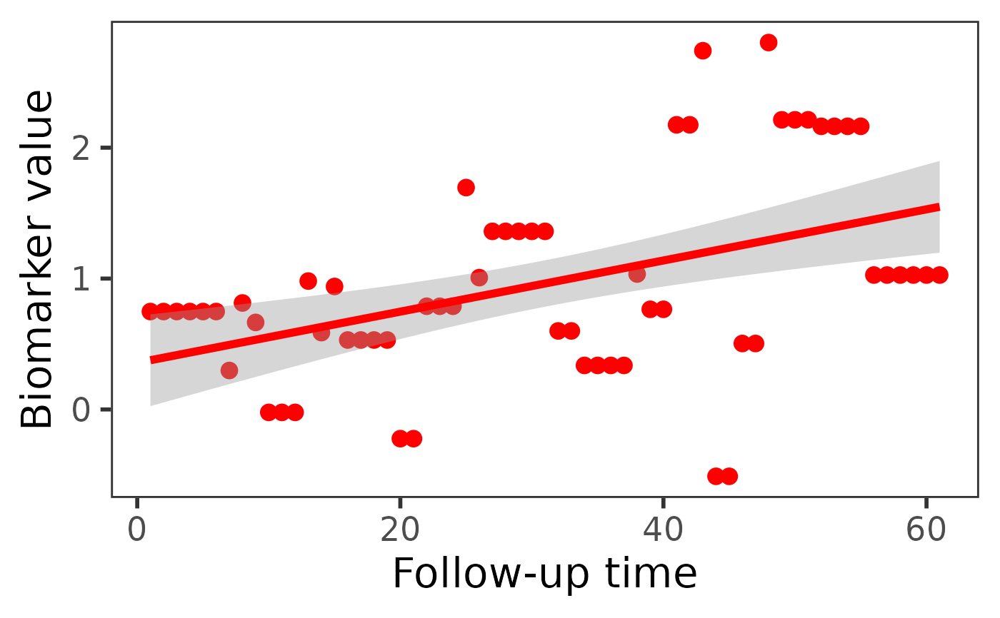
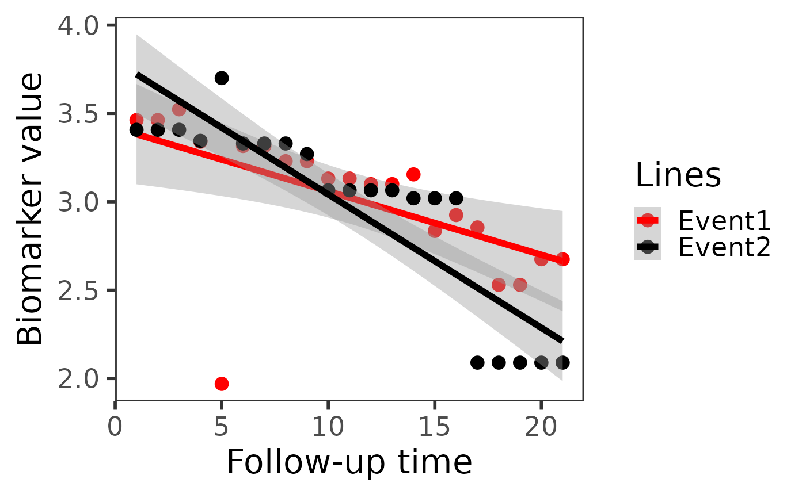

This function generates the Conditional Mean Trajectories (CMT) plot.
All patients in this plot experience events at the same time point,
specified by condi_time2event. Several evenly spaced time points between
the baseline and condi_time2event are selected for plotting. Each point is
calculated using the mean value of all patients' biomarker values at that time point.
The interval between two time points is defined by interval_time
Usage
cmtPlot(
data_plot_all,
condi_time2event,
event_type_variable,
event_type,
bio_variable,
time_variable,
survival_variable,
interval_time = 1/12,
id_variable = "id"
)Arguments
- data_plot_all
A
data.framethat includes the biomarker used for plotting. It is utilized to plot conditional mean trajectories (CMT).- condi_time2event
Conditional event time, indicating that all patients should have events at this time in the plot. If
NULL, it defaults to the midpoint of the observed range oftime_variableindata_plot_all.- event_type_variable
Competing risks variable indicator name. Set to NULL if there are no competing risks.
- event_type
A vector containing the names of all event types.
- bio_variable
Name of the biomarker variable used for plotting.
- time_variable
The name of time variable in linear mixed model.
- survival_variable
Name of the time-to-event outcomes variable.
- interval_time
The time interval between two time points. Time points are plotted within the baseline to event time.
- id_variable
Name of the patient ID column in
data_plot_all. Default is"id".
Examples
# example without competing risks
data(pbc3)
pbc.cmt <- cmtPlot(data_plot_all = pbc3, condi_time2event = 5,
event_type_variable = NULL, event_type = NULL,
bio_variable = "serBilir", time_variable = "year",
survival_variable = "years",
interval_time = 1/12
)
pbc.cmt
#> `geom_smooth()` using formula = 'y ~ x'

# example with competing risks
data(pbc3)
data_plot_all = pbc3[!is.na(pbc3$status4),]
pbc.cmt.cr <- cmtPlot(data_plot_all, condi_time2event = 5,
event_type_variable = 'status4', event_type = c("0", "1"),
bio_variable = "albumin", time_variable = "year",
survival_variable = "years",
interval_time = 1/4
)
pbc.cmt.cr
#> `geom_smooth()` using formula = 'y ~ x'
#> `geom_smooth()` using formula = 'y ~ x'
